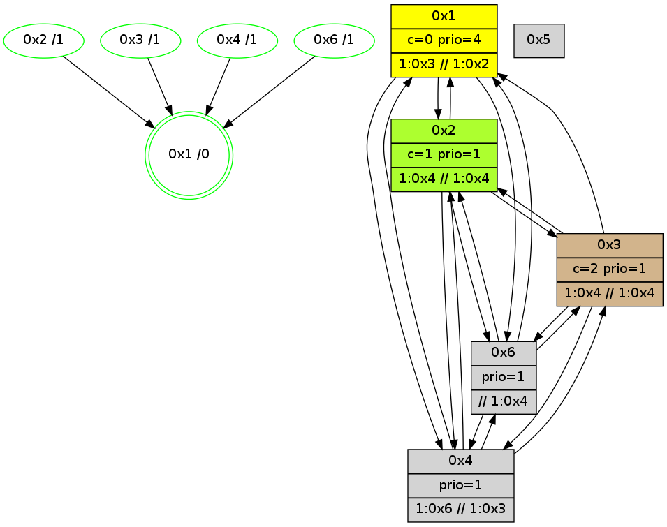

>> << IDX [start] -100 -25 -5 +0 +5 +25 +100 [815.080756187]
 Previous packets
----------------------------------------------------------------------
810.159671 beacon01(adaf) #0 coord=01,02,05,03,04,06 cycle=432.0ms assoc
-- color-indic=1 64 67 89
810.169632 beacon02(adaf) #0 coord=01,02,05,03,04,06 cycle=432.0ms assoc 64 36 76
810.179631 beacon05(adaf) #0 coord=01,02,05,03,04,06 cycle=432.0ms assoc 64 90 5c
810.189632 beacon03(adaf) #0 coord=01,02,05,03,04,06 cycle=432.0ms assoc 64 0c 78
810.199633 beacon04(adaf) #0 coord=01,02,05,03,04,06 cycle=432.0ms assoc 64 aa 52
810.209633 beacon06(adaf) #0 coord=01,02,05,03,04,06 cycle=432.0ms assoc 64 de 4e
810.221332 [Hello(3): seq=612 sym=2,4,1,6 sysInfo=hasWarning stat=2:10,14,4,1/4:7,12,3,1/1:0,8,3,1/6:15,7,14,10]
810.223998 [Hello(4): seq=614 sym=2,6,1,3 sysInfo=hasWarning,coloring-mode-on,ColoringModeIndicationCalled stat=2:10,13,2,1/6:0,0,0,0/1:2,7,8,1/3:7,0,1,1]
810.225752 [Hello(1): seq=513 sym=2,4,6 sysInfo=hasWarning,coloring-mode-on,ColoringModeRequestCalled stat=2:15,10,8,3/4:9,4,8,1/6:8,5,7,0]
810.228613 [Color(4) seq=40 @0:0 prio=1 >1.@6 >>1.@3,1.@4,1.@6 c=0,1]
810.230422 [Hello(6): seq=527 sym=3,4,1,2 mpr= sysInfo=hasWarning,coloring-mode-on,ColoringModeIndicationCalled stat=3:0,0,1,0/4:7,11,4,1/1:7,2,8,1/2:11,0,9,4]
----------------------------------------------------------------------
810.651779 beacon01(adaf) #0 coord=01,02,05,03,04,06 cycle=432.0ms assoc
-- color-indic=1 64 a3 e6
810.661739 beacon02(adaf) #0 coord=01,02,05,03,04,06 cycle=432.0ms assoc 64 f2 19
810.671739 beacon05(adaf) #0 coord=01,02,05,03,04,06 cycle=432.0ms assoc 64 54 33
810.681739 beacon03(adaf) #0 coord=01,02,05,03,04,06 cycle=432.0ms assoc 64 c8 17
810.691740 beacon04(adaf) #0 coord=01,02,05,03,04,06 cycle=432.0ms assoc 64 6e 3d
810.701741 beacon06(adaf) #0 coord=01,02,05,03,04,06 cycle=432.0ms assoc 64 1a 21
810.714121 [Color(6) seq=40 @0:0 prio=1 >1.@3 >>1.@2,1.@3,1.@4 c=0,1]
810.716062 [Hello(2): seq=1104 sym=6,4,1,3 sysInfo=coloring-mode-on,ColoringModeIndicationCalled stat=6:9,2,7,3/4:10,13,3,1/1:3,7,7,1/3:3,0,3,0]
810.719196 [Color(2) seq=40 @0:0 color=1 prio=1 >1.@3,1.@4,1.@6 >>1.@2,1.@3,1.@6 c=0]
810.723767 [Color(1) seq=41 @0:0 color=0 prio=4 >1.@3,1.@6 >>1.@2,1.@3,1.@4 c=1]
----------------------------------------------------------------------
811.143888 beacon01(adaf) #0 coord=01,02,05,03,04,06 cycle=432.0ms assoc
-- color-indic=1 64 ee e1
811.153849 beacon02(adaf) #0 coord=01,02,05,03,04,06 cycle=432.0ms assoc 64 bf 1e
811.163849 beacon05(adaf) #0 coord=01,02,05,03,04,06 cycle=432.0ms assoc 64 19 34
811.173849 beacon03(adaf) #0 coord=01,02,05,03,04,06 cycle=432.0ms assoc 64 85 10
811.183850 beacon04(adaf) #0 coord=01,02,05,03,04,06 cycle=432.0ms assoc 64 23 3a
811.193850 beacon06(adaf) #0 coord=01,02,05,03,04,06 cycle=432.0ms assoc 64 57 26
811.205549 [Hello(3): seq=613 sym=2,4,1,6 sysInfo=hasWarning stat=2:11,15,4,1/4:8,13,3,1/1:0,9,3,1/6:0,7,14,10]
811.208220 [Hello(4): seq=615 sym=2,6,1,3 sysInfo=hasWarning,coloring-mode-on,ColoringModeIndicationCalled stat=2:11,14,2,1/6:1,0,0,0/1:3,8,8,1/3:8,0,1,1]
811.210992 [Hello(6): seq=528 sym=3,4,1,2 sysInfo=hasWarning,coloring-mode-on,ColoringModeIndicationCalled stat=3:0,0,1,0/4:7,11,4,1/1:7,3,8,1/2:12,1,9,4]
811.213086 [Color(4) seq=41 @0:0 prio=1 >1.@6 >>1.@3,1.@4,1.@6 c=0,1]
811.217293 [STC(1) #0.70 new-neigh,tree-change,inconsistent-stability,stable,to-color d=0]
----------------------------------------------------------------------
811.635997 beacon01(adaf) #0 coord=01,02,05,03,04,06 cycle=432.0ms assoc
-- color-indic=1 64 2a 8e
811.645958 beacon02(adaf) #0 coord=01,02,05,03,04,06 cycle=432.0ms assoc 64 7b 71
811.655958 beacon05(adaf) #0 coord=01,02,05,03,04,06 cycle=432.0ms assoc 64 dd 5b
811.665959 beacon03(adaf) #0 coord=01,02,05,03,04,06 cycle=432.0ms assoc 64 41 7f
811.675959 beacon04(adaf) #0 coord=01,02,05,03,04,06 cycle=432.0ms assoc 64 e7 55
811.685958 beacon06(adaf) #0 coord=01,02,05,03,04,06 cycle=432.0ms assoc 64 93 49
811.697536 [STC(4)->1 #0.70 new-neigh,tree-change,inconsistent-stability,stable,to-color d=1]
811.699625 [Hello(2): seq=1105 sym=6,4,1,3 sysInfo=coloring-mode-on,ColoringModeIndicationCalled stat=6:10,2,7,3/4:11,14,3,1/1:3,8,8,1/3:4,0,3,0]
811.701483 [STC(3)->1 #0.70 new-neigh,tree-change,inconsistent-stability,stable,to-color d=1]
811.702775 [STC(2)->1 #0.70 new-neigh,tree-change,inconsistent-stability,stable,to-color d=1]
811.704704 [TreeStatus(3)-.->1 #0.70 new-neigh,tree-change,inconsistent-stability,stable child=1]
811.706025 [Color(2) seq=41 @0:0 color=1 prio=1 >1.@3,1.@4,1.@6 >>1.@2,1.@3,1.@6 c=0]
811.709579 [Color(1) seq=42 @0:0 color=0 prio=4 >1.@3,1.@6 >>1.@2,1.@3,1.@4 c=1]
811.713516 [Color(6) seq=41 @0:0 prio=1 >1.@3 >>1.@2,1.@3,1.@4 c=0,1]
----------------------------------------------------------------------
812.128106 beacon01(adaf) #0 coord=01,02,05,03,04,06 cycle=432.0ms assoc
-- color-indic=1 64 66 3e
812.138067 beacon02(adaf) #0 coord=01,02,05,03,04,06 cycle=432.0ms assoc 64 37 c1
812.148069 beacon05(adaf) #0 coord=01,02,05,03,04,06 cycle=432.0ms assoc 64 91 eb
812.158067 beacon03(adaf) #0 coord=01,02,05,03,04,06 cycle=432.0ms assoc 64 0d cf
812.168067 beacon04(adaf) #0 coord=01,02,05,03,04,06 cycle=432.0ms assoc 64 ab e5
812.178067 beacon06(adaf) #0 coord=01,02,05,03,04,06 cycle=432.0ms assoc 64 df f9
812.189835 [Hello(3): seq=614 sym=2,4,1,6 sysInfo=hasWarning stat=2:11,0,4,1/4:9,13,3,1/1:0,10,4,1/6:1,8,14,10]
812.192508 [Hello(4): seq=616 sym=2,6,1,3 sysInfo=hasWarning,coloring-mode-on,ColoringModeIndicationCalled stat=2:11,15,3,1/6:1,1,1,0/1:3,9,9,1/3:9,0,2,2]
812.195640 [Color(4) seq=42 @0:0 prio=1 >1.@6 >>1.@3,1.@4,1.@6 c=0,1]
812.198107 PARSE ERROR************************
Traceback (most recent call last):
File "PacketAnalysis.py", line 167, in showOperaPacket
structPacket = OperaPacketParse.parsePacket(rawPacket)
File "../../pkg-python/HipSens/Core/OperaPacketParse.py", line 461, in parsePacket
return parseHelloMessage(data)
File "../../pkg-python/HipSens/Core/OperaPacketParse.py", line 127, in parseHelloMessage
assert struct.calcsize("H")*len(neighAddrList) == len(linkList)
AssertionError
48 18 01 00 02 03 00 02 02 04 04 00 06 00 53 04 00 86 00 00 4c 04 18 59 07 69 4c 8b
----------------------------------------------------------------------
812.620215 beacon01(adaf) #0 coord=01,02,05,03,04,06 cycle=432.0ms assoc
-- color-indic=1 64 a2 51
812.630177 beacon02(adaf) #0 coord=01,02,05,03,04,06 cycle=432.0ms assoc 64 f3 ae
812.640176 beacon05(adaf) #0 coord=01,02,05,03,04,06 cycle=432.0ms assoc 64 55 84
812.650175 beacon03(adaf) #0 coord=01,02,05,03,04,06 cycle=432.0ms assoc 64 c9 a0
812.660177 beacon04(adaf) #0 coord=01,02,05,03,04,06 cycle=432.0ms assoc 64 6f 8a
812.670178 beacon06(adaf) #0 coord=01,02,05,03,04,06 cycle=432.0ms assoc 64 1b 96
812.681732 [Color(1) seq=43 @0:0 color=0 prio=4 >1.@3,1.@6 >>1.@2,1.@3,1.@4 c=1]
812.684364 [Hello(2): seq=1106 sym=6,4,1,3 sysInfo=coloring-mode-on,ColoringModeIndicationCalled stat=6:10,3,7,3/4:12,15,4,1/1:4,9,8,1/3:4,0,3,0]
812.686205 [Color(6) seq=42 @0:0 prio=1 >1.@3 >>1.@2,1.@3,1.@4 c=0,1]
812.689235 [Color(2) seq=42 @0:0 color=1 prio=1 >1.@3,1.@4,1.@6 >>1.@2,1.@3,1.@6 c=0]
----------------------------------------------------------------------
813.112322 beacon01(adaf) #0 coord=01,02,05,03,04,06 cycle=432.0ms assoc
-- color-indic=1 64 da fc
813.122282 beacon02(adaf) #0 coord=01,02,05,03,04,06 cycle=432.0ms assoc 64 8b 03
813.132283 beacon05(adaf) #0 coord=01,02,05,03,04,06 cycle=432.0ms assoc 64 2d 29
813.142285 beacon03(adaf) #0 coord=01,02,05,03,04,06 cycle=432.0ms assoc 64 b1 0d
813.152285 beacon04(adaf) #0 coord=01,02,05,03,04,06 cycle=432.0ms assoc 64 17 27
813.162284 beacon06(adaf) #0 coord=01,02,05,03,04,06 cycle=432.0ms assoc 64 63 3b
813.176728 [Hello(4): seq=617 sym=2,6,1,3 sysInfo=hasWarning,coloring-mode-on,ColoringModeIndicationCalled stat=2:11,0,3,1/6:1,2,1,0/1:4,10,9,1/3:10,1,2,2]
813.179859 [Color(4) seq=43 @0:0 prio=1 >1.@6 >>1.@3,1.@4,1.@6 c=0,1]
----------------------------------------------------------------------
813.604430 beacon01(adaf) #0 coord=01,02,05,03,04,06 cycle=432.0ms assoc
-- color-indic=1 64 1e 93
813.614391 beacon02(adaf) #0 coord=01,02,05,03,04,06 cycle=432.0ms assoc 64 4f 6c
813.624392 beacon05(adaf) #0 coord=01,02,05,03,04,06 cycle=432.0ms assoc 64 e9 46
813.634391 beacon03(adaf) #0 coord=01,02,05,03,04,06 cycle=432.0ms assoc 64 75 62
813.644391 beacon04(adaf) #0 coord=01,02,05,03,04,06 cycle=432.0ms assoc 64 d3 48
813.654391 beacon06(adaf) #0 coord=01,02,05,03,04,06 cycle=432.0ms assoc 64 a7 54
813.666760 [Color(6) seq=43 @0:0 prio=1 >1.@3 >>1.@2,1.@3,1.@4 c=0,1]
813.668746 [Hello(2): seq=1107 sym=6,4,1,3 sysInfo=coloring-mode-on,ColoringModeIndicationCalled stat=6:10,3,7,3/4:13,0,4,1/1:4,10,8,1/3:4,0,3,0]
813.671879 [Color(2) seq=43 @0:0 color=1 prio=1 >1.@3,1.@4,1.@6 >>1.@2,1.@3,1.@6 c=0]
813.675867 [Color(3) seq=28 @0:0 color=2 prio=1 >1.@4,1.@6 >>1.@4,1.@6 c=0,1]
813.681344 [STC(1) #0.71 new-neigh,tree-change,inconsistent-stability,stable,to-color d=0]
813.683925 [Color(1) seq=44 @0:0 color=0 prio=4 >1.@3,1.@6 >>1.@2,1.@3,1.@4 c=1]
----------------------------------------------------------------------
814.096538 beacon01(adaf) #0 coord=01,02,05,03,04,06 cycle=432.0ms assoc
-- color-indic=1 64 52 23
814.106501 beacon02(adaf) #0 coord=01,02,05,03,04,06 cycle=432.0ms assoc 64 03 dc
814.116499 beacon05(adaf) #0 coord=01,02,05,03,04,06 cycle=432.0ms assoc 64 a5 f6
814.126500 beacon03(adaf) #0 coord=01,02,05,03,04,06 cycle=432.0ms assoc 64 39 d2
814.136500 beacon04(adaf) #0 coord=01,02,05,03,04,06 cycle=432.0ms assoc 64 9f f8
814.146499 beacon06(adaf) #0 coord=01,02,05,03,04,06 cycle=432.0ms assoc 64 eb e4
814.158114 [STC(2)->1 #0.71 new-neigh,tree-change,inconsistent-stability,stable,to-color d=1]
814.160214 [Hello(4): seq=618 sym=2,6,1,3 sysInfo=hasWarning,coloring-mode-on,ColoringModeIndicationCalled stat=2:12,1,3,1/6:1,2,1,0/1:4,11,10,1/3:11,2,2,2]
814.161962 [Hello(1): seq=517 sym=2,4,6 sysInfo=hasWarning,coloring-mode-on,ColoringModeRequestCalled stat=2:0,1,0,0/4:10,6,8,1/6:9,7,7,0]
814.163888 [Hello(3): seq=616 sym=2,4,1,6 sysInfo=hasWarning stat=2:11,1,4,1/4:11,15,3,1/1:1,12,5,1/6:1,9,14,10]
814.166554 [STC(4)->1 #0.71 new-neigh,tree-change,inconsistent-stability,stable,to-color d=1]
814.167789 [STC(3)->1 #0.71 new-neigh,tree-change,inconsistent-stability,stable,to-color d=1]
814.170193 [Color(4) seq=44 @0:0 prio=1 >1.@6 >>1.@3,1.@4,1.@6 c=0,1]
----------------------------------------------------------------------
814.588647 beacon01(adaf) #0 coord=01,02,05,03,04,06 cycle=432.0ms assoc
-- color-indic=1 64 96 4c
814.598607 beacon02(adaf) #0 coord=01,02,05,03,04,06 cycle=432.0ms assoc 64 c7 b3
814.608608 beacon05(adaf) #0 coord=01,02,05,03,04,06 cycle=432.0ms assoc 64 61 99
814.618608 beacon03(adaf) #0 coord=01,02,05,03,04,06 cycle=432.0ms assoc 64 fd bd
814.628608 beacon04(adaf) #0 coord=01,02,05,03,04,06 cycle=432.0ms assoc 64 5b 97
814.638609 beacon06(adaf) #0 coord=01,02,05,03,04,06 cycle=432.0ms assoc 64 2f 8b
814.650894 [Color(6) seq=44 @0:0 prio=1 >>1.@4,1.@6 c=0,1,2]
814.652948 [Hello(2): seq=1108 sym=6,4,1,3 sysInfo=coloring-mode-on,ColoringModeIndicationCalled stat=6:11,3,8,3/4:14,1,5,1/1:4,11,9,1/3:4,1,3,0]
814.656081 [Color(2) seq=44 @0:0 color=1 prio=1 >1.@4,1.@6 >>1.@4,1.@6 c=0,2]
814.660079 [Color(3) seq=29 @0:0 color=2 prio=1 >1.@4,1.@6 >>1.@4,1.@6 c=0,1]